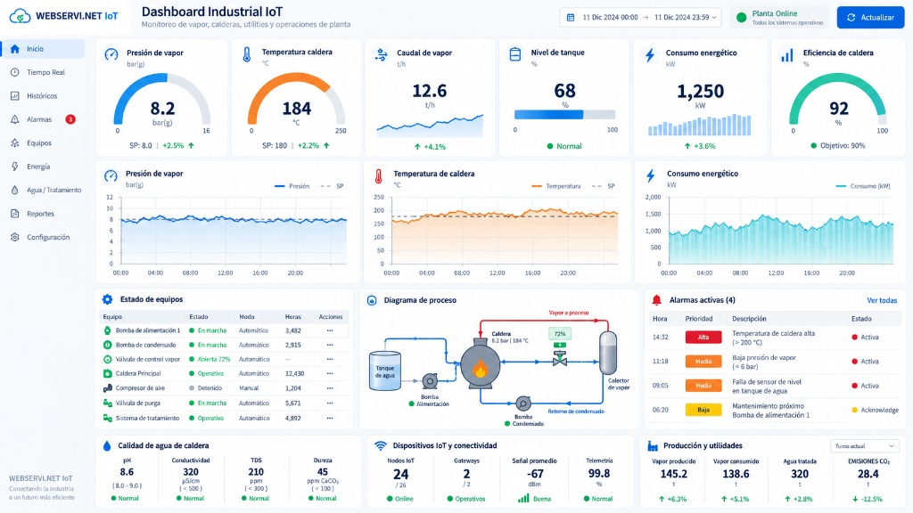

Integramos instrumentos de campo, tableros de control, conectividad de largo alcance y plataformas de supervisión para convertir las variables críticas de su proceso en información útil, oportuna y accionable.
Un ecosistema integrado que conecta la maquinaria física con el control automático y el análisis de datos en tiempo real.
Ingeniería e integración de control para equipos, plantas de tratamiento y líneas de producción. Programación de PLC, variadores de frecuencia (VFD) y pantallas HMI definidos según criticidad, secuencia y seguridad de operación.
Diseño, armado e instalación de tableros eléctricos para distribución de fuerza, arrancadores de motores, bancos de condensadores y gabinetes de instrumentación con protecciones termomagnéticas y sobretensión seleccionadas para planta.
Sistemas de sensores alámbricos e inalámbricos (LoRaWAN / Celular) para supervisar presión, temperatura, caudal, nivel, calidad de agua (pH, ORP, conductividad) y consumo energético en tiempo real con dashboards y alarmas.
Cómo transformamos señales físicas en decisiones operativas claras y alertas automáticas.
Captura de presión, temperatura, caudal, nivel, pH, ORP y conductividad con sondas calibradas.
Adaptación e integración de señales 4-20 mA, RTD/PT100, 0-10 V o buses industriales RS485/Modbus.
Transmisión inalámbrica LoRaWAN de largo alcance, enlaces Ethernet o red celular con alta inmunidad al ruido.
Almacenamiento de históricos, gráficos de tendencias, reportes automáticos y APIs para integración con SCADA.
Avisos instantáneos por WhatsApp, email o SMS ante superación de umbrales críticos o desvíos de proceso.
Supervise continuamente las variables térmicas, hidráulicas y fisicoquímicas que definen la eficiencia de su planta.
Presión en colectores de caldera, estaciones PRV, redes de aire comprimido y tuberías de proceso.
Líneas de vapor, retorno de condensado, calentadores de fluido térmico, reactores y cámaras frías.
Medición de flujo de vapor, agua de alimentación, combustible y efluentes para control de costos.
Control de acidez/alcalinidad y capacidad desinfectante en plantas de potabilización (PPA) y PTAR.
Supervisión de pureza de agua en ósmosis inversa, purgas de caldera y desmineralizadores SDA.
Nivel en tanques de almacenamiento, consumo eléctrico (kW/h), corriente de bombas y estado de relés.
Soluciones probadas en instalaciones térmicas, plantas de agua y líneas industriales.
Monitoreo continuo de presión de vapor en distribuidores, temperatura del condensado retornado, calidad del agua de alimentación (conductividad y pH) y estado de bombas dosificadoras.
Alertas ante caídas anómalas de presión o incremento en temperatura de retorno.
Monitoreo de conductividad para optimizar los ciclos de purga sin desperdiciar calor.
Supervisión continua de calidad de agua potable (Norma NB 512) y descarga de efluentes (Ley 1333): pH, turbidez, ORP para dosificación de cloro, conductividad en permeado de ósmosis y niveles de tanque.
Históricos digitales listos para auditorías ambientales y reportes de calidad.
Control preciso de bombas dosificadoras de coagulante, hipoclorito y antiincrustante.
Supervise toda su planta desde cualquier dispositivo móvil o computador. Consulte gráficos de tendencias, configure umbrales de alerta y descargue reportes operativos en formato CSV o PDF.

Garantizamos proyectos ejecutados a tiempo, seguros y con soporte continuo en campo.
Levantamiento de variables críticas, rangos operativos, distancias, fuentes de alimentación y equipos existentes.
Selección de sensores, diagramas unifilares de tableros, cálculo de cobertura inalámbrica y arquitectura de software.
Instalación electromecánica, conexionado de campo, configuración de gateways, dashboards y pruebas en carga.
Capacitación a operadores de planta, soporte post-instalación, calibración periódica y mantenimiento programado.
La telemetría LoRaWAN e IoT se implementa como capa superior para supervisión remota, visualización histórica y alertas tempranas. Las protecciones críticas, paradas de emergencia, válvulas de seguridad y enclavamientos deben permanecer siempre cableados de forma física, local e independiente conforme a las normas de seguridad del proceso.
Identificamos las variables críticas de su proceso térmico o hídrico y diseñamos una solución escalable desde el sensor hasta el dashboard y las alertas automáticas.